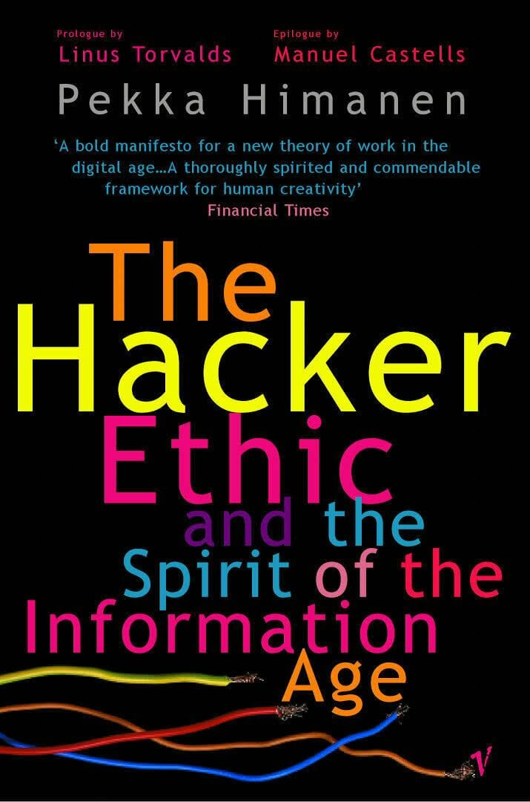

注：【】部分为笔者心得，非原文摘抄。
- 黑客伦理
- 工作伦理
- 激情；
- 自由；
- 金钱伦理
- 社会价值；
- 开放性；
- 网络伦理
- 主动性；
- 关怀。
- 工作伦理
- 黑客编程，因为编程的挑战对他们而言本身就是一种乐趣。
- 任何职业都可以成为黑客，不一定是高科技。只要与技能有关，并且倾心专注你正在做的事情，你就可以能成为黑客。——Burrell Smith
- 懒惰是灵魂的敌人。——本尼迪克特
- 必要的话，黑客也时刻准备干整个创造活动中不可缺少但枯燥乏味的工作。
- 【休闲时间可以通过优化工作和学习时间来保障，而不是靠拖延。】
- 当一个人说话时，他能用平静而从容的语气，他的时间就属于他自己。——柏拉图
- 【给工作中的变数预留时间余地。】
- 黑客一直都尊重个人，他们一直是反对权威者。
- 改革工作模式不仅是尊重工人的事情，而且还是把人类当作人类来尊重的大事。
- 如果一个人把金钱作为最高目标的话，那么工作本身就不再是一种价值，而仅仅是一种手段。
- 即使工作本身不涉及社会交往，超越仅仅为了获得食物的社会承认依然是工作的一个重要的社会动机。
- 生活的基本组成部分不应该是工作或金钱，而是激情和创造具有某种社会价值的愿望。
- 黑客并不幼稚。
- 要变成黑客首先要做到两个方面：充满激情的行为和支配时间的自由。
- 黑客工作伦理强调激情和自由节奏的行为。
- 黑客金钱伦理思想并不反对挣钱，只是反对通过封锁信息来赚钱。
- 科学理论是集体创造的，理论中的缺陷是通过整个科学共同体的批判而发现和逐步剔除的。
- 权威的位置应该对任何人都是开放的，并且是以成就为基础的。
- 在信息时代，比个别科学成果更重要的是能够创造这些成果的开放的学院模式。
- 自由人不应该像奴隶一样学习。——柏拉图
- 黑客精神的中心思想就是提醒我们：利用开放模式，通过个人之间的直接协作可以完成许多大事情，唯一的瓶颈就是我们的想象力。
- 言论自由和隐私权一直是很重要的黑客理想，网络的发展也一直与此一致。
- 隐私不只是一个伦理问题，它还是一个技术问题。
- 言论自由是通往成为活跃的公众人物、接受和清楚表达各种观点的途径。
- 工作时间经优化而缩短并不意味着工作量的减少或工作中心论的减弱。
- 只有当个人在工作中能够自我管理的时候，他才能成为休闲时光的积极创造者。
- 因工作时间缺乏激情而导致休闲时间激情的缺乏是十分可悲的。
- 雇佣关系是一种随着条件而波动的资源网络。
- 网络的逻辑要求必要时通过连接和断开资源而进行不断的优化，唯一的限制就是需要保持网络的稳定性。
- 在黑客的态度中，创造是一种内在的价值。
- 技术是社会变迁的一个基本维度。社会通过文化、经济、政治和技术因素的复杂互动实现自身的发展和转型。
- 所谓技术，通常被理解为科学知识的应用，为再生产方式的技术性能设定程式。
- 没有文化转型，就没有技术革命。